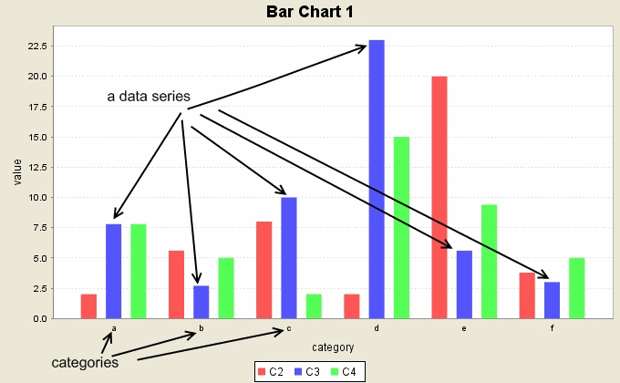

Graph > Bar Chart
A bar chart shows the frequencies of a number of categories.
With this utility,
you can create horizontal or vertical bar charts that
represent the frequences of a number
of data series with data in a number of categories.

The bar chart utility allows the user to specify graph variables
containing data series and a category variable. The number of categories
must be the same as the number of data values in each series.
It also provides the options of having a plot title, axis labels,
and legend.
- To open the histogram utility, select Graph > Bar Chart.
- To add a data series, select the column containing the data values
in the Select the column variable of a new series: and
click the Add Series button.
- To remove a data series, select the series in the
Graph Series list, and click the Remove Series button.
- Select the column containing category labels for the data values
in each series.
- Select whether to have horizontal or vertical bars
under Directions of bars drop-down menu.
- Enter labels for the x and y axis in the corresponding text fields.
- Enter the plot title in the Plot Title: text field.
- Select the Show Legend check box to show a legend indicating
the different groups.
- Click OK to create the bar chart.